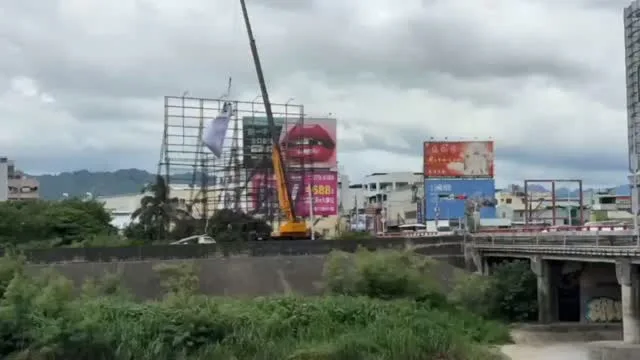
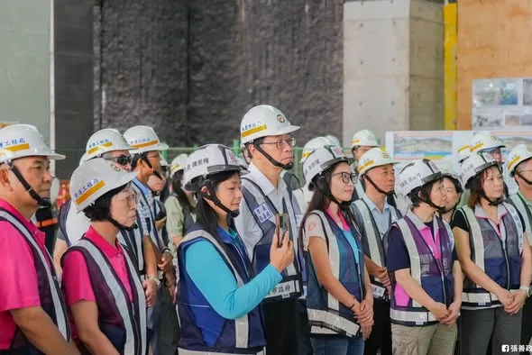
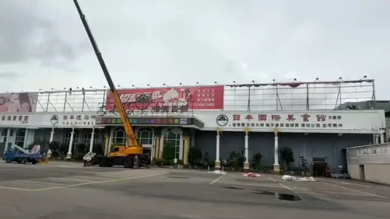

新台中，交給何欣純！等了8年，捷運藍線動工了！台中捷運路網要全力有效率推進！中央地方一起，做好交通配套，工程時程公開透明，讓市民清楚。
Posts
新台中，交給何欣純！等了8年，捷運藍線動工了！台中捷運路網要全力有效率推進！中央地方一起，做好交通配套，工程時程公開透明，讓市民清楚。

綠線延伸大坑！何欣純4年內動工＋拼完工


倒數3天！ 北捷信義線東延段8/30即將通車🚇 今天，我再次來到全新的 「廣慈/奉天宮站」，沿著未來大家實際乘車的動線，從車站標示、收票閘門、電扶梯、電梯，到月臺號誌、廣播、廁所、照明，逐一檢視通車前的準備情況。 我們也同步視察站外的交通標線、YouBike、公車候車亭等設施，就是希望讓大家的乘車體驗更加順暢。 我也特別提醒團隊，要從尖峰時段的人潮，以及乘客們的使用需求來設想，包含長輩、身障朋友，以及推著娃娃車的家長和兒童，盡可能把每個細節都考慮周全。 信義線東延段長1.4公里，被稱為「捷運史上工程最艱難」的捷運路段。一路克服複雜地質與深層開挖等挑戰，工程團隊走到今天真的很不容易。 8月30日，期待和大家一起迎接信義線東延段正式通車！

「杰伴」真的來同行💪🏻一早到桃園人熟悉的新永和市場，感謝熱情的年輕朋友，印出網友幫我設計的應援手板，親自來幫我加油！ 今天也是豐收的一天！感謝沿途的攤商跟鄉親，送給我蘿蔔、蒜苗、竹筍、花生，祝福「好彩頭、凍蒜、節節高升、好事發生」。有支持者特地加入志工行列，陪我一起掃市場。鄰近咖啡店的老闆，也特別準備手工烘焙咖啡和我們分享，能量瞬間充滿❤️🔥 永和市場一路承載桃園人的採買日常，因捷運工程遷建後，當時市府花了許多時間與攤商協調溝通，現在市場冷氣完備、乾溼分離、停車空間更充裕、環境更加明亮舒適。這樣的規劃值得肯定，證明只要從使用者需求出發，市場可以兼顧傳統生活與新的城市機能。 但大家最關心的，依然是捷運綠線究竟何時能真正通車？面對工程延宕，市府有責任給出確切時程。近期在各區接連拋出大巨蛋、區公所改建等大型規劃，但建設不能遇到選舉急救章畫大餅，更不能缺乏在地居民參與，讓建設真正回應地方需求。 感謝競總主委范振修資政、黃家齊議員、黃瓊慧 桃園觀察日記議員、李光達議員（桃園區）議員、桃園媽媽-李柏瑟議員候選人、新永和市場自治會許輝仁會長、李麗凰榮譽會長、北桃園競總黃宗源總幹事一起同行。 我會和桃園隊一起站在第一線，桃園要進步，就要貼近地方的真正聲音！一起讓心桃園，動起來💖

【本集介紹】 📌 龍介開箱網友北真實業寄來的茶 📌 台南大淹水「三天淹四次」..水溝到底有沒有清？ 📌 勘災也扯預算...藍白砍預算卓榮泰沒辦法南下勘災？ 📌 回覆網友陳情：南科裡限速不合理... 📌 台南市安南區爆炸案3人羈押禁見 📌 賴清德台南勘災稱「淹水面積少99%請少批評」... #龍介直播 #謝龍介 #龍介仙 #台南 #台語

@schuanglawyer:一早來到內壢市場！很多鄉親特地來等待，世杰跟團隊從市場一路走進街區，收到好多鼓勵跟打氣💪🏻我要特別感謝內壢福海宮劉守榮主委，昨晚不幸遇到車禍，今天依然堅持到場相挺，真的很感動，祝福主委早日康復。 大內壢居民超過十萬，人口持續成長。今天有不少市民跟攤商跟我反映，新華街路面多年沒有重新刨鋪，內壢國小通學廊道完成後，這一帶停車空間缺乏的問題，依然沒有一併改善。大家期待逛市場的感受更好，期待整體生活環境可以同步升級！ 這些看似日常的小事，其實都是居民每天生活最直接的感受。 未來鐵路地下化，沿線將會釋出更多公共空間。世杰上任後，會全面盤點居民需求，規劃地方期待已久的公有市場，改善公有空間雍塞跟不足的問題。同時也要積極協助鐵路地下化，讓工程如期如質完成。 感謝謝內壢市場的熱情，大家送上柿子、粽子、白蘿蔔，祝福世杰「事事如意、好事接粽來、好彩頭」，滿滿心意我都收到了！ 人口在成長，建設不能慢下來。我一定會全力以赴，讓內壢生活更便利、發展更順暢！心內壢，動起來💖


到立法院說個玩笑，這五個月跑遍新北 29 區，最大的收穫是瘦了五公斤。 說實在，到立法院，是想再讓另一個東西瘦一點。 不是我，是法條。 做工程的人最清楚，一個案子動不了，卡的常常不是工地。不是錢還沒到，就是法還沒改。 軌道要動，等的是中央的預算。都更要動，等的是那幾條該修沒修的老法規。 那，這兩件事光靠地方政府自己還不夠，還要立法院點頭。 所以前幾天到國民黨團、民眾黨團坐下來談。軌道建設 123、樹林鐵路地下化，還有都更 5 夠力，一項一項報告，一項一項拜託。 有委員跟我說，他的選區跟新北接壤，希望以後合作多一點。生活圈本來就是連在一起的，行政區的線是畫給公文看的，不是畫給通勤的人看的。 新北 400 多萬人等的，不只是一張漂亮的路網圖。是那一段路，什麼時候可以真的動工。 五個月瘦五公斤。下一個要瘦的，是法條。

中壢最認真，就是黃崇真 Huang Chung-Chen！ 中壢正在面臨交通轉型期，除了鐵路地下化，還有中壢車站跟捷運銜接的重大工程，也同步進行中。崇真議員在議會持續監督，積極對市府提出各項建議，盼望能夠減少交通黑暗期對市民造成的困擾，加速建設的進度。 對市民來說，大型建設很重要，但每天生活遇到的小事，同樣關鍵。包括大家每天經過的路口安不安全、人行道好不好走。他把大家的需求放在心上，會勘、協調一件件解決，三年半以來服務超過6千件，真的非常拚。 崇真的溫暖，不只對有選票的大人。當他發現青少年自傷率愈來愈高，未成年孩子的心理健康出現危機時，也全力積極強化心輔資源，守護下一代。 這些年來，南桃園人口持續成長，醫療需求相當迫切，但在張善政任內大型醫院計畫停滯，遲遲沒有進展。未來世杰當市長，一定會盡快補上這個洞，我主張優先發展癌症、急重症、兒童等特色醫療。長期目標就是要為桃園爭取第二座醫學中心，讓醫療量能跟上城市發展的腳步。 感謝到場的市民朋友不畏風雨，把活動中心坐滿。謝謝我的競總主委范振修資政、南區競總黃仁杼總幹事、張火爐主委、黃傅淑香主委、舊明里羅善婷里長、興南里葉青旺里長、中建里李應偉里長、中央里楊萬焙里長、普義里黃崇修里長、永福里黃寶貞里長、中壢慈惠堂陳燦宏榮譽董事長，都現身給我們支持。 大事盯緊、小事做好，是崇真跟世杰共同的堅持。11/28，需要大家給我們更多支持，讓最打拚的議員跟市長聯手為地方做更多！讓心中壢 動起來💖

@schuanglawyer:一早來到熟悉的埔心市場，雖然下著雨，攤商和鄉親朋友依然非常熱情🔥有支持者特地帶著昨天才公布的「企鵝阿爸」來找我拍照，以及邀請我在新招牌上簽名的店家，還有送上蒜苗、蘿蔔、粽子、發糕、刈包，滿滿好彩頭的市民朋友，一路給我滿滿的鼓勵！ 埔心地區人口快速成長、新社區住宅林立，生活機能也必須跟上。從道路交通、大眾運輸、人行安全，到公園綠地、社福設施，都需要更完整的規劃。埔心市場更是在地重要的採買中心與民生廚房，未來市場及周邊用地如何發展，市府應該積極和攤商、居民溝通，兼顧生計與生活品質。 楊梅的發展不能再等，這三年多來，包括幼擴二期、龍科三期、台積電進駐等重大產業發展，都需要更大力推進。桃園要加速產業升級、創造更多工作機會，地方不能再原地踏步。 楊梅、埔心需要衝刺的建設，讓世杰一項項來打造。心楊梅，動起來💖


何欣純全速推動台中捷運藍線延伸進太平！！

@a_chun1973:等了8年，捷運藍線動工了！ 台中捷運路網要全力有效率推進！中央地方一起，做好交通配套，工程時程公開透明，讓市民清楚。 新台中，交給何欣純！

等了8年，捷運藍線動工了！ 台中捷運路網要全力有效率推進！中央地方一起，做好交通配套，工程時程公開透明，讓市民清楚。 新台中，交給何欣純！


今天，我來到桃園市中心地下約40公尺深的 #捷運綠線G07桃園站，看看工程最新進度。 這裡是國內開挖最深的地下捷運車站，也是未來綠線、臺鐵與捷運棕線「三軌共站」的重要樞紐。 今天完成最後一面地下結構側牆澆築，代表歷經將近4年的站體地下結構工程正式完成，可以開始往下一階段前進。 G07的施工條件相當複雜，不只位在交通繁忙的市中心，還要與桃園鐵路地下化工程共構。工程團隊採用 #逆打工法，一方面降低地層沉陷風險，也比傳統工法縮短約7.5個月工期。 我今天到現場，除了看進度，也特別關心後續工程如何銜接。 現在地下結構完成，接下來就是建築裝修、機電及軌道設備；站體也已經預留可拆除式牆板，未來可以直接銜接臺鐵、捷運棕線及周邊商場。 換句話說，今天我們把未來桃園市中心最重要的交通轉乘樞紐，再往前推進了一個關鍵階段。 而就在昨天，#捷運綠線延伸中壢 也正式動工。 延伸線全長約7.1公里、設置6座車站，未來從G01建德興豐站一路進入中壢市中心，串聯臺鐵中壢站與機場捷運；沿線也將銜接 #桃園市立醫院、#中壢體育園區 等重大建設。 這兩天，一邊是延伸中壢正式進場，一邊是綠線主線突破關鍵工程，再加上綠線北段正朝今年底G15b至G11通車目標推進，接下來，我們還要繼續朝119年底綠線主線通車努力。 捷運是很長的工程，過程沒有魔法，只有每天累積的進度；我們會努力把該做的事情做好，讓通車的那一天，照著計畫到來。
台中交通三個大步！何欣純綠線延伸大坑 4年內動工 拼完工

台中好消息再+1！繼上週行政院核定 #捷運橘線 可行性研究後，行政院再度核定「台63線銜接國道3號中投交流道改善工程」可行性評估報告，而且總經費49.98億將由中央全額負擔！ 中投公路是台中屯區往返市區、銜接國道的重要交通動脈，未來工程完工後，可望改善交流道周邊壅塞及國道銜接效率，讓台中交通更加順暢。 今年4月，我就在立法院交通委員會質詢交通部長 陳世凱，關切計畫進度、要求中央加速推動，如今計畫終得核定，是重要的新階段起點。 接下來我會持續追蹤工程進度、爭取中央加速規劃，讓台中市民早日享有更順暢的交通環境！ #心存大台中 #市長換欣_台中創新

一早來到內壢市場！很多鄉親特地來等待，世杰跟團隊從市場一路走進街區，收到好多鼓勵跟打氣💪🏻我要特別感謝內壢福海宮劉守榮主委，昨晚不幸遇到車禍，今天依然堅持到場相挺，真的很感動，祝福主委早日康復。 大內壢居民超過十萬，人口持續成長。今天有不少市民跟攤商跟我反映，新華街路面多年沒有重新刨鋪，內壢國小通學廊道完成後，這一帶停車空間缺乏的問題，依然沒有一併改善。大家期待逛市場的感受更好，期待整體生活環境可以同步升級！ 這些看似日常的小事，其實都是居民每天生活最直接的感受。 未來鐵路地下化，沿線將會釋出更多公共空間。世杰上任後，會全面盤點居民需求，規劃地方期待已久的公有市場，改善公有空間雍塞跟不足的問題。同時也要積極協助鐵路地下化，讓工程如期如質完成。 感謝競總主委范振修資政、張曉昀議員 @vina.lovezhongli 、黃崇真議員 @cchuang_0223 、彭俊豪議員 @c_peng 、魏筠議員 @weiyunin ，以及內壢福海宮劉守榮主委、黃國棟委員、林琦彬委員同行。 感謝謝內壢市場的熱情，大家送上柿子、粽子、白蘿蔔，祝福世杰「事事如意、好事接粽來、好彩頭」，滿滿心意我都收到了！ 人口在成長，建設不能慢下來。我一定會全力以赴，讓內壢生活更便利、發展更順暢！心內壢，動起來💖

中壢最認真，就是黃崇真 @cchuang_0223 ！ 中壢正在面臨交通轉型期，除了鐵路地下化，還有中壢車站跟捷運銜接的重大工程，也同步進行中。崇真議員在議會持續監督，積極對市府提出各項建議，盼望能夠減少交通黑暗期對市民造成的困擾，加速建設的進度。 對市民來說，大型建設很重要，但每天生活遇到的小事，同樣關鍵。包括大家每天經過的路口安不安全、人行道好不好走。他把大家的需求放在心上，會勘、協調一件件解決，三年半以來服務超過6千件，真的非常拚。 崇真的溫暖，不只對有選票的大人。當他發現青少年自傷率愈來愈高，未成年孩子的心理健康出現危機時，也全力積極強化心輔資源，守護下一代。 這些年來，南桃園人口持續成長，醫療需求相當迫切，但在張善政任內大型醫院計畫停滯，遲遲沒有進展。未來世杰當市長，一定會盡快補上這個洞，我主張優先發展癌症、急重症、兒童等特色醫療。長期目標就是要為桃園爭取第二座醫學中心，讓醫療量能跟上城市發展的腳步。 感謝到場的市民朋友不畏風雨，把活動中心坐滿。謝謝我的競總主委范振修資政、南區競總黃仁杼總幹事、張火爐主委、黃傅淑香主委、舊明里羅善婷里長、興南里葉青旺里長、中建里李應偉里長、中央里楊萬焙里長、普義里黃崇修里長、永福里黃寶貞里長、中壢慈惠堂陳燦宏榮譽董事長，都現身給我們支持。 大事盯緊、小事做好，是崇真跟世杰共同的堅持。11/28，需要大家給我們更多支持，讓最打拚的議員跟市長聯手為地方做更多！讓心中壢 動起來💖


【本集介紹】 📌 龍介開箱網友北真實業寄來的茶 📌 台南大淹水「三天淹四次」..水溝到底有沒有清？ 📌 勘災也扯預算...藍白砍預算卓榮泰沒辦法南下勘災？ 📌 回覆網友陳情：南科裡限速不合理... 📌 台南市安南區爆炸案3人羈押禁見 支持龍介線上捐款：https://donate.newebpay.com/062268268/hsiehlungchieh115 龍介的 Tiktok 開放 Call in 👉 https://www.tiktok.com/@longuy1003/live 👉 Call in 步驟：請至 Tiktok 搜尋「謝龍介」並找到龍介的直播，直播畫面的下方申請「訪客連線」，龍介兄會隨機接通。

一早來到熟悉的埔心市場，雖然下著雨，攤商和鄉親朋友依然非常熱情🔥有支持者特地帶著昨天才公布的「企鵝阿爸」來找我拍照，以及邀請我在新招牌上簽名的店家，還有送上蒜苗、蘿蔔、粽子、發糕、刈包，滿滿好彩頭的市民朋友，一路給我滿滿的鼓勵！ 埔心地區人口快速成長、新社區住宅林立，生活機能也必須跟上。從道路交通、大眾運輸、人行安全，到公園綠地、社福設施，都需要更完整的規劃。埔心市場更是在地重要的採買中心與民生廚房，未來市場及周邊用地如何發展，市府應該積極和攤商、居民溝通，兼顧生計與生活品質。 楊梅的發展不能再等，這三年多來，包括幼擴二期、龍科三期、台積電進駐等重大產業發展，都需要更大力推進。桃園要加速產業升級、創造更多工作機會，地方不能再原地踏步。 感謝競總主委范振修資政、鄭淑方議員 @fangfang4826081 、項柏翰議員候選人 @bigelephant.bro 、埔心里張仁森里長、楊梅區黃姓宗親會黃麒浚會長同行。 楊梅、埔心需要衝刺的建設，讓世杰一項項來打造。心楊梅，動起來💖

何欣純成功爭取中央核定 捷運橘線進大里！！💪💪

市民朋友早安！ 今天早上，我到議會進行專案報告。 針對高齡友善居住規劃、社宅基地盤點與進度、遮陽降溫與防洪韌性、聯外交通長期規劃、公車行車安全與自動駕駛等議題，向全體市民及議員說明市府的精進作為與施政方向。 歡迎加入直播，一起關心臺北市！


TEAM TAIWAN 拓荒探險隊第三彈角色曝光！ 猜猜看這次登場的是誰？沒錯，就是大家最熟悉的 #水獺媽媽✨ 這次我和民進黨的縣市長候選人們化身「TEAM TAIWAN 拓荒探險隊」，和大家走遍全台各地。水獺媽媽帶著大聲公和滿滿裝備出發，一起從淡江大橋、野柳一路探索到九份，把新北的交通建設、山海美景、特色老街通通走一遍！ 新北有山、有海，更有29區各自精彩的地方特色。未來，我要推動 #新皇冠海岸、#鑽石山城 觀光政見，整合山海、老街、商圈、漁港等豐富資源，打造屬於新北自己的觀光品牌，讓更多國內外旅客愛上新北市，也讓市民以自己的城市為榮。 從交通、產業、觀光，到居住環境、教育和照顧，我會繼續帶著「溫暖、創新、會做事」的精神，用創新方法打造更好的新北市，讓建設持續進步、生活品質一起升級。 下一個登場的會是哪位角色呢👀 一起期待接下來的驚喜吧！

@schuanglawyer:「杰伴」真的來同行💪🏻一早到桃園人熟悉的新永和市場，感謝熱情的年輕朋友，印出網友幫我設計的應援手板，親自來幫我加油！ 今天也是豐收的一天！感謝沿途的攤商跟鄉親，送給我蘿蔔、蒜苗、竹筍、花生，祝福「好彩頭、凍蒜、節節高升、好事發生」。有支持者特地加入志工行列，陪我一起掃市場。鄰近咖啡店的老闆，也特別準備手工烘焙咖啡和我們分享，能量瞬間充滿❤️🔥 永和市場一路承載桃園人的採買日常，因捷運工程遷建後，當時市府花了許多時間與攤商協調溝通，現在市場冷氣完備、乾溼分離、停車空間更充裕、環境更加明亮舒適。這樣的規劃值得肯定，證明只要從使用者需求出發，市場可以兼顧傳統生活與新的城市機能。 但大家最關心的，依然是捷運綠線究竟何時能真正通車？面對工程延宕，市府有責任給出確切時程。近期在各區接連拋出大巨蛋、區公所改建等大型規劃，但建設不能遇到選舉急救章畫大餅，更不能缺乏在地居民參與，讓建設真正回應地方需求。 我會和桃園隊一起站在第一線，桃園要進步，就要貼近地方的真正聲音！一起讓心桃園，動起來💖
政院核定台 63 線銜接國 3 何欣純：完善南台中路網 立法委員何欣純爭取改善屯區交通再傳好消息 […] 〈 政院核定台 63 線銜接國 3 何欣純：完善南台中路網 〉這篇文章最早發佈於《 何欣純官方網站｜2026 台中市長候選人 》。

說實在，新店、烏來的建設，我不是第一次做。 AI 廊道我推，烏來的水我顧。安坑輕軌已經在跑了。 大的我扛，小的我也顧。

一早來到內壢市場！很多鄉親特地來等待，世杰跟團隊從市場一路走進街區，收到好多鼓勵跟打氣💪🏻我要特別感謝內壢福海宮劉守榮主委，昨晚不幸遇到車禍，今天依然堅持到場相挺，真的很感動，祝福主委早日康復。 大內壢居民超過十萬，人口持續成長。今天有不少市民跟攤商跟我反映，新華街路面多年沒有重新刨鋪，內壢國小通學廊道完成後，這一帶停車空間缺乏的問題，依然沒有一併改善。大家期待逛市場的感受更好，期待整體生活環境可以同步升級！ 這些看似日常的小事，其實都是居民每天生活最直接的感受。 未來鐵路地下化，沿線將會釋出更多公共空間。世杰上任後，會全面盤點居民需求，規劃地方期待已久的公有市場，改善公有空間雍塞跟不足的問題。同時也要積極協助鐵路地下化，讓工程如期如質完成。 感謝競總主委范振修資政、張曉昀議員、黃崇真 Huang Chung-Chen議員、彭俊豪議員、魏筠議員，以及內壢福海宮劉守榮主委、黃國棟委員、林琦彬委員同行。 感謝內壢市場的熱情，大家送上柿子、粽子、白蘿蔔，祝福世杰「事事如意、好事接粽來、好彩頭」，滿滿心意我都收到了！ 人口在成長，建設不能慢下來。我一定會全力以赴，讓內壢生活更便利、發展更順暢！心內壢，動起來💖

@schuanglawyer:中壢最認真，就是黃崇真 @cchuang_0223 ！ 中壢正在面臨交通轉型期，除了鐵路地下化，還有中壢車站跟捷運銜接的重大工程，也同步進行中。崇真議員在議會持續監督，積極對市府提出各項建議，盼望能減少交通黑暗期對市民造成的困擾，加速建設的進度。 對市民來說，大型建設很重要，但每天生活遇到的小事，同樣關鍵。包括大家每天經過的路口安不安全、人行道好不好走。他把大家的需求放在心上，會勘、協調一件件解決，三年半以來服務超過6千件，真的非常拚。 崇真的溫暖，不只對有選票的大人。當他發現青少年自傷率愈來愈高，未成年孩子的心理健康出現危機時，也全力積極強化心輔資源，守護下一代。 這些年來，南桃園人口持續成長，醫療需求相當迫切，但在張善政任內大型醫院計畫停滯，遲遲沒有進展。未來世杰當市長，一定會盡快補上，我主張優先發展癌症、急重症、兒童等特色醫療。長期目標就是要為桃園爭取第二座醫學中心，讓醫療量能跟上城市發展的腳步。 感謝到場的市民朋友不畏風雨，把活動中心坐滿。大事盯緊、小事做好，是崇真跟世杰共同的堅持。11/28，需要大家給我們更多支持，讓最打拚的議員跟市長聯手做更多！讓心中壢 動起來💖

20260825 台南大淹水「三天淹四次」..水溝到底有沒有清？勘災也扯預算...藍白砍預算卓榮泰沒辦法南下勘災？回覆網友陳情：南科裡限速不合理... @longmedia ｜龍介的直播

一早來到熟悉的埔心市場，雖然下著雨，攤商和鄉親朋友依然非常熱情🔥有支持者特地帶著昨天才公布的「企鵝阿爸」來找我拍照，以及邀請我在新招牌上簽名的店家，還有送上蒜苗、蘿蔔、粽子、發糕、刈包，滿滿好彩頭的市民朋友，一路給我滿滿的鼓勵！ 埔心地區人口快速成長、新社區住宅林立，生活機能也必須跟上。從道路交通、大眾運輸、人行安全，到公園綠地、社福設施，都需要更完整的規劃。埔心市場更是在地重要的採買中心與民生廚房，未來市場及周邊用地如何發展，市府應該積極和攤商、居民溝通，兼顧生計與生活品質。 楊梅的發展不能再等，這三年多來，包括幼擴二期、龍科三期、台積電進駐等重大產業發展，都需要更大力推進。桃園要加速產業升級、創造更多工作機會，地方不能再原地踏步。 感謝競總主委范振修資政、鄭淑方-桃園市議員、項柏翰 楊梅新選項議員候選人、埔心里張仁森里長、楊梅區黃姓宗親會黃麒浚會長同行。 楊梅、埔心需要衝刺的建設，讓世杰一項項來打造。心楊梅，動起來💖

@a_chun1973:何欣純成功爭取中央核定 捷運橘線進大里！！💪💪